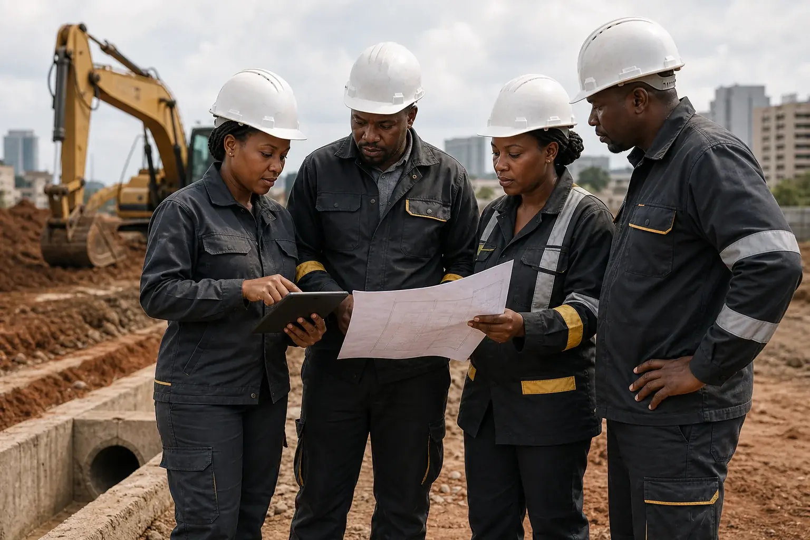

Earthworks
Excavation, cut and fill, compaction, stabilization and formation to specification.

Practical civil delivery
The work below and around a building determines how well the whole project performs.
We coordinate plant, people, materials, temporary works and interfaces with the main build. Every package is planned around safety, ground conditions, access, weather and downstream activities.
Discuss civil works ↗Core capabilities
From bulk excavation to finished external works, our team maintains control of levels, interfaces, testing and progress.
Excavation, cut and fill, compaction, stabilization and formation to specification.
Stormwater, foul drainage, attenuation and coordinated below-ground systems.
Service routes, ducts, chambers and connections integrated with the site plan.
Pavements, kerbs, yards, walkways and external finishes built for long-term use.
Control at every level
Civil packages touch almost every other trade. We plan those interfaces early and verify work as it progresses so later activities can proceed confidently.